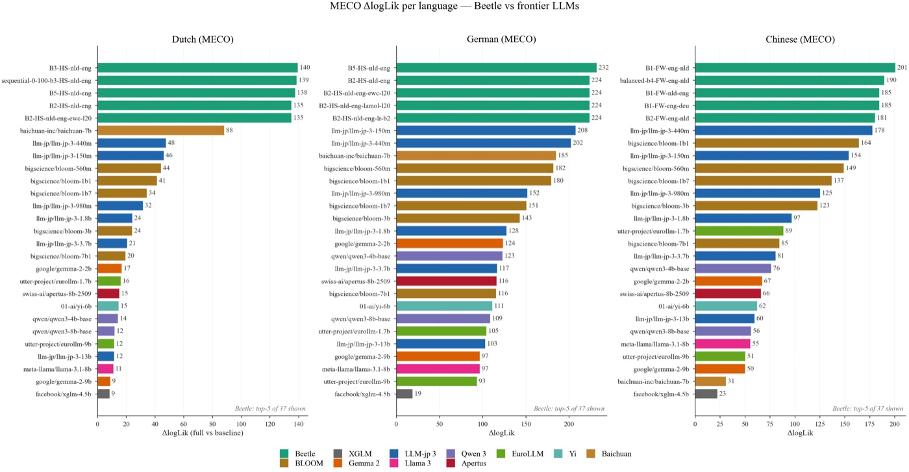
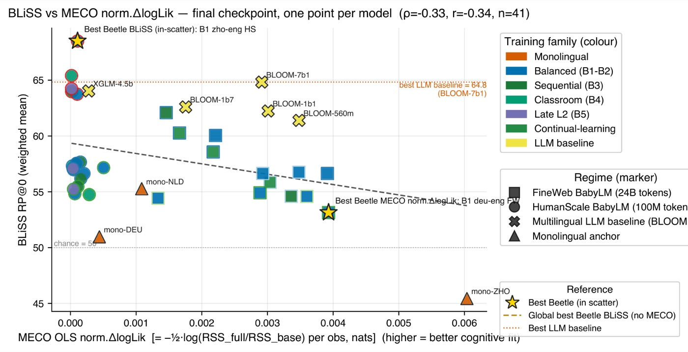
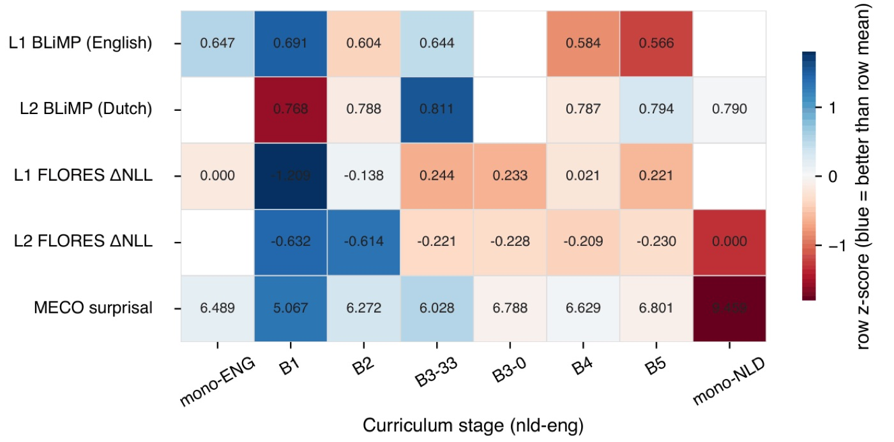
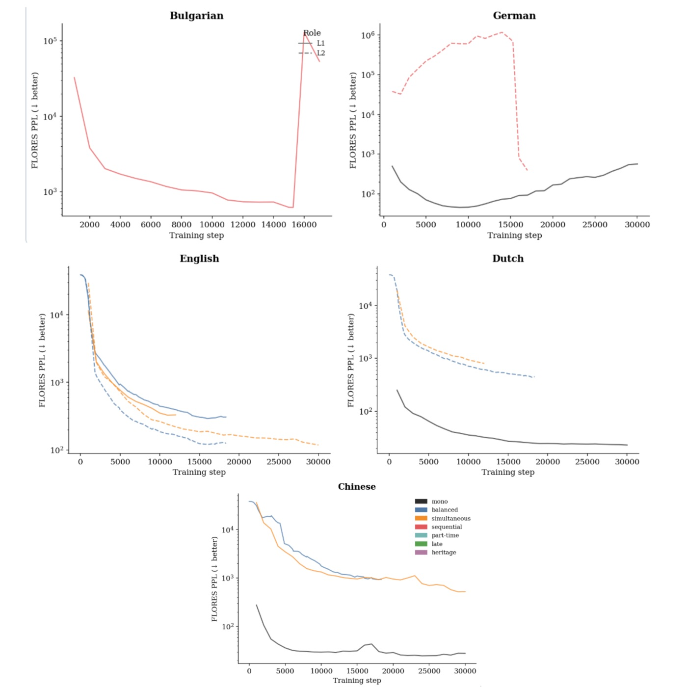
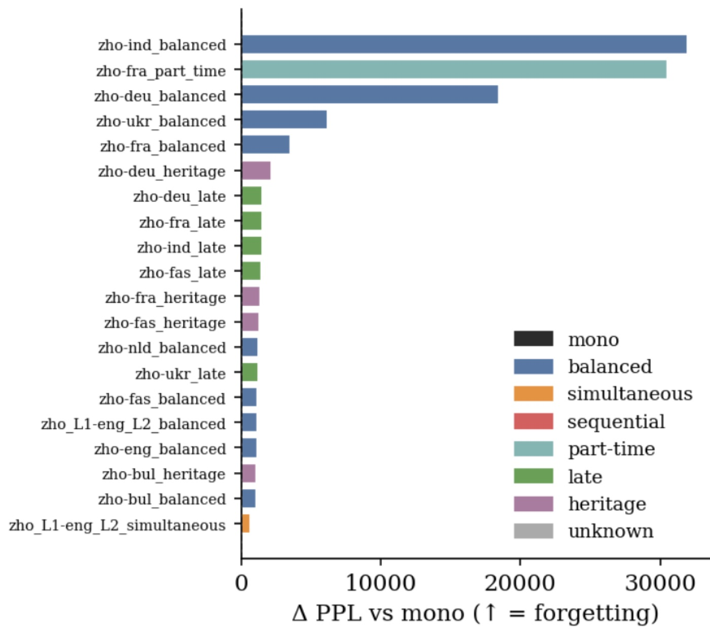
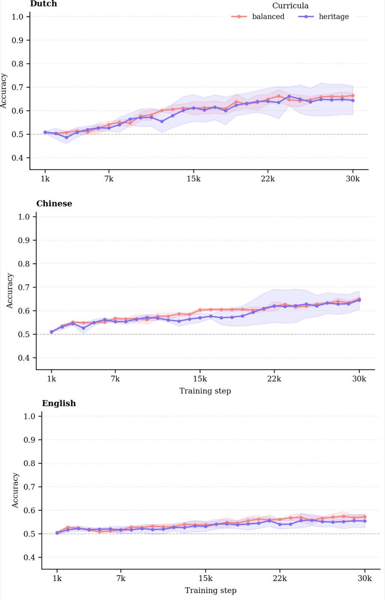

Flagship framework
Beetle
An open-source framework I built for controlled bilingual & multilingual language-model pretraining and interpretability — the foundation of my PhD.
First-author paper — under review Paper available on request
Overview
What Beetle is
A unified framework for studying how language models acquire a second language — under tightly controlled, fully reproducible experimental conditions.
Beetle is a framework I designed and built for controlled bilingual and multilingual pretraining. It gives researchers a single, declarative interface in which the tokeniser, the target language, the training budget, and the exposure structure of the data can each be manipulated independently. Everything is configured through declarative YAML, which turns what used to be a tangle of bespoke scripts into a systematic, large-scale ablation of how learning dynamics and data structure shape acquisition.
Although Beetle grew out of computational psycholinguistics — modelling how humans process a second language — it is much more than a psycholinguistics tool. It is a general interpretability and controlled-pretraining infrastructure: because every model is checkpointed densely across training, and because exposure is a first-class, configurable variable, Beetle lets you ask mechanistic questions about when and how abilities emerge, not just whether a final model has them.
Beetle turns exposure structure into an experimental variable — so we can watch a second language being acquired, checkpoint by checkpoint, rather than only inspecting the finished model.

The artefact
By the numbers
Beetle is not a single script but a large, reproducible model suite. I trained the whole thing.
The 13 L1s span German, Dutch, Chinese, Italian, Hindi, Russian, Turkish, Basque and more — deliberately chosen to vary typological distance from English. Checkpoints follow a log2 schedule and preserve gradients, activations and circuits, so the suite supports interpretability out of the box; for several of these languages these are the first densely checkpointed models released. The default backbone is a 125M LLaMA-style PicoDecoder, with encoder-decoder, MoE and SSM variants also supported. Models are evaluated on MECO L2 reading-time, BLiSS, CEFR, JFLEG and Mono/Multi-BLiMP.
The paper
Structured exposure pretraining
This is my first first-author main-conference paper. Using Beetle, we pretrain bilingual language models under five carefully designed exposure curricula and show that how a second language is introduced during training — its structure and staging — systematically shapes how the resulting model processes that language. Structured, staged exposure improves alignment with human L2 reading times (MECO L2), often matching or beating multilingual LLMs of up to 8B parameters at a fraction of the size, while balanced exposure is better for offline grammatical judgement (CEFR, JFLEG). We find a robust dissociation between online processing and offline competence, and show that curriculum benefits interact with a language's typological proximity to English.
Design
Exposure curricula
Five ways of introducing the second language during pretraining. Each is a declarative configuration in Beetle — the same models, the same budget, only the exposure structure changes.
Balanced
L1 and L2 are interleaved evenly throughout training — a steady, simultaneous diet of both languages from the start.
Simultaneous
Both languages present from the outset, mixed together as a single stream — bilingual acquisition from the first step.
Sequential
The L1 is established first, then the L2 is introduced in a distinct later stage — staged acquisition of the second language.
Classroom / episodic
The L2 arrives in spaced, episodic bursts interspersed with L1 — an analogue of classroom instruction rather than immersion.
Late
The L2 is introduced only near the end of training, after extensive L1 exposure — a late-onset second-language learner.
Results
What we find
Exposure structure is not a cosmetic training detail — it changes what the model learns, and how well small models mirror human second-language processing.
Small Beetle models rival 8B LLMs on human L2 reading-time
Models trained with structured, staged exposure align with human L2 reading times (MECO L2) as well as — and often better than — multilingual LLMs of up to 8B parameters, at a tiny fraction of the size. Human-scale, controlled pretraining is competitive with brute-force scale for this cognitive-modelling target.

A dissociation: staged exposure for processing, balanced for grammaticality
The best curriculum depends on what you measure. Staged exposure yields the best fit to online reading-time behaviour, whereas balanced exposure produces stronger offline grammatical judgement (CEFR, JFLEG). This dissociation between online processing and offline competence mirrors a distinction long drawn in the psycholinguistics of second-language acquisition.

Learning dynamics: phase transitions, curricula, and forgetting
Because Beetle checkpoints densely, we can watch these abilities emerge. Acquisition proceeds in phase transitions rather than smoothly; curricula interact with typological proximity to English; and sequential and late curricula expose catastrophic forgetting of the L1 that balanced exposure avoids. These dynamics are invisible if you only inspect the final model.




Reproducibility
The infrastructure
Beetle is not one script — it is three pip-installable libraries and several supporting infrastructures, released so that every result can be reproduced end to end.
Controlled-pretraining engine
Independently manipulate tokeniser, target language, training budget and architecture from declarative YAML; train the full model suite under standardised conditions.
Exposure-curriculum system
Compose the B1–B5 exposure structures (and new ones) as configuration, so curricula are first-class, reproducible experimental objects.
Analysis & interpretability toolkit
Consume dense checkpoints — gradients, activations, circuits — to trace learning dynamics and run the evaluation suite (MECO, BLiSS, CEFR, JFLEG, BLiMP).
Everything needed to reproduce the work is released: the 114 model checkpoints, the tokenisers, the decontaminated, pretokenised training data at all three scales, and the full analysis pipelines. The goal is that any result on this page can be re-derived from the released artefacts alone.
Attribution
My framework
Beetle is my own framework. I designed and built the controlled bilingual and multilingual pretraining system, I trained the 114 models, and I authored the exposure-curriculum engine, the analysis toolkit, and the pip-installable libraries that make up the infrastructure. It is the foundation of my PhD and the centre of the accompanying first-author paper.
Beetle builds on the PicoDecoder backbone from PicoLM, which I did not create — Pico is inherited, collaborative infrastructure. Beetle itself — the controlled-pretraining design, the exposure curricula, the model suite, the interpretability tooling and the released artefacts — is my individual contribution, and I am careful to draw that distinction clearly.